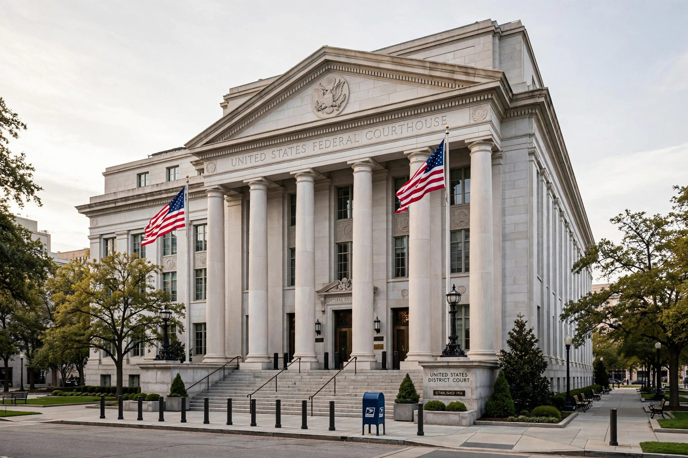

| Federal Rules of Civil Procedure | |
|---|---|
| Effective | September 16, 1938 |
| Authority | Rules Enabling Act, 28 U.S.C. §§ 2071–2077 |
| Applies to | United States district courts |
The Federal Rules of Civil Procedure (abbreviated FRCP or Fed. R. Civ. P.) govern civil procedure in United States district courts. They were promulgated by the Supreme Court under the Rules Enabling Act and first took effect in 1938, unifying procedure and merging law and equity, with the stated aim in Rule 1 of securing the "just, speedy, and inexpensive determination of every action."

The Rules are organised into titles covering: commencement and pleadings (Rules 3–16, including Rule 8 notice pleading, Rule 11 sanctions, Rule 12 motions, and Rule 15 amendments); parties and class actions (Rules 17–25, including Rule 23); disclosures and discovery (Rules 26–37, including depositions and interrogatories); trials (Rules 38–53); judgments (Rules 54–63, see Judgment); provisional and final remedies (Rules 64–71, including Rule 65 injunctions and temporary restraining orders); and appeals-related and general provisions.
The Rules replaced the old Conformity Act system and code pleading in federal court. Major amendments include the 1966 class-action revision, the 1993 mandatory disclosure regime, the 2006 amendments for electronically stored information, and the 2015 proportionality amendments to Rule 26.
Many states have modelled their own civil procedure rules on the FRCP.